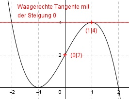

Aufgabe 23 Der Graph einer ganzrationalen Funktion 3. Grades hat im Punkt (1|4) eine waagerechte Tangente und bei (0|2) einen Wendepunkt. Wie lautet seine Funktionsgleichung?  Allgemeine Form einer ganzrationalen Funktion 3. Grades: f(x) = ax3 + bx2 + cx + d f’(x) = 3ax2 + 2bx + c f’’(x) = 6ax + 2b 4 Bedingungen: 1. Hat im Punkt (1|4) eine waagerechte Tangente bedeutet zum einen: f(1) = 4 --> a * 13 + b * 12 + c * 1 + d = 4 --> a + b + c + d = 4 I 2. Hat im Punkt (1|4) eine waagerechte Tangente bedeutet zum anderen: f’(1) = 0 --> 3a * 12 + 2b * 1 + c = 0 --> 3a + 2b + c = 0 II 3. Hat bei (0|2) einen Wendepunkt bedeutet zum einen: f(0) = 2 --> a * (0)3 + c * 0 + d = 2 --> d = 2 4. Hat bei (0|2) einen Wendepunkt bedeutet zum anderen: f’’(0) = 0 --> 6a * 02 + 2b = 0 --> 2b = 0 |:2 --> b = 0 b = 0 und d = 2 in I eingesetzt, ergibt a + c + 2 = 4 |-2 a + c = 2 III b = 0 in II eingesetzt, ergibt 3a + c = 0 IV III * (-1) + IV -a - c = -2 3a + c = 0 -------------- 2a = -2 |:2 a = -1 a = - 1 in III eingesetzt: -1 + c = 2 |+1 c = 3 Gesuchte Funktionsgleichung: f(x) = -x3 + 3x + 2